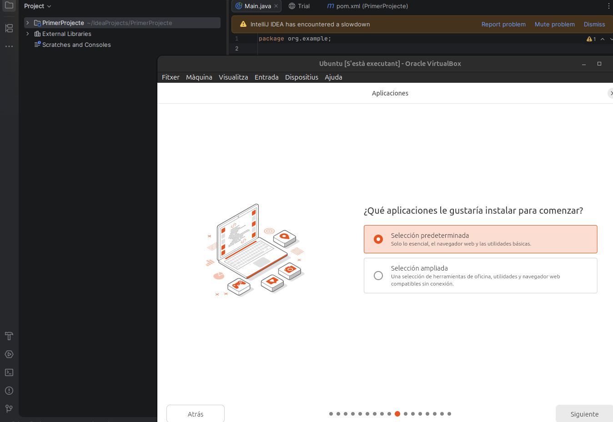
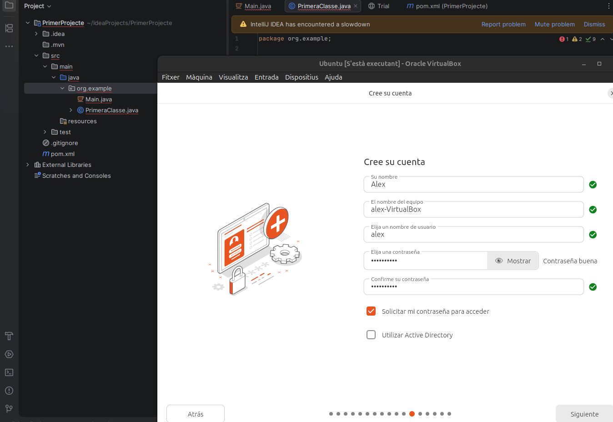
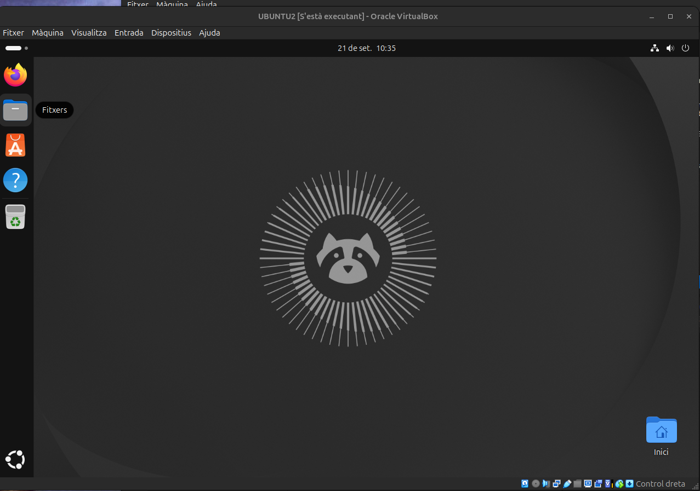
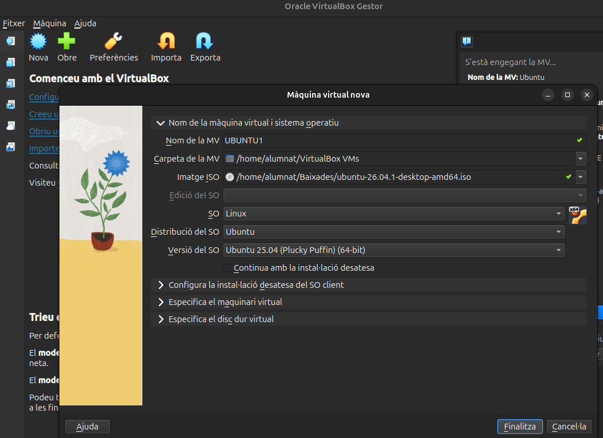
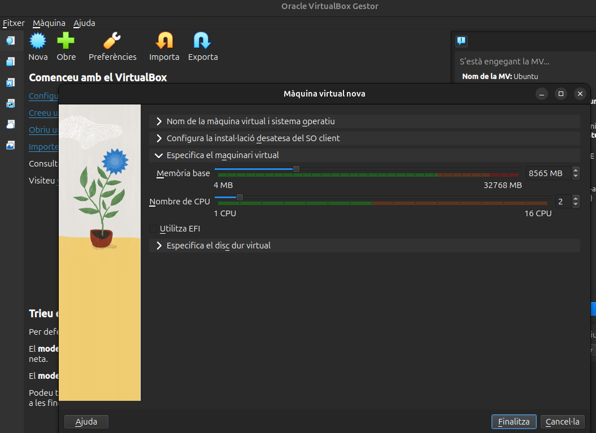
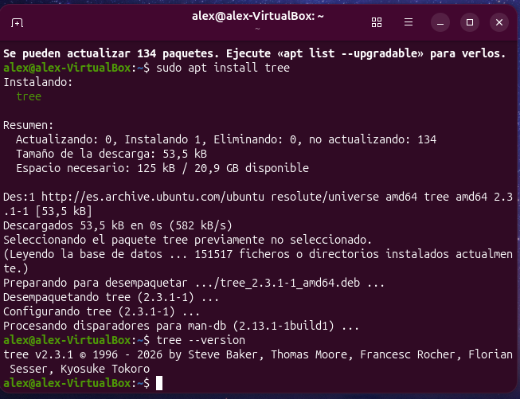

1. Instal·lació del sistema operatiu
Instal·lació d'Ubuntu en una màquina virtual de VirtualBox, arrencant des de la imatge ISO i seguint l'assistent pas a pas.
- Arrencar la màquina virtual des de la imatge ISO d'Ubuntu.
- Triar «Instal·lar Ubuntu» i la instal·lació interactiva.
- Utilitzar la connexió per cable i la selecció d'aplicacions predeterminada, sense programari privatiu addicional.
- Crear el compte d'usuari i el nom de l'equip.
- Esperar que finalitzi la còpia d'arxius i reiniciar.






↑ Tornar a l'índex
2. Punts de restauració
A VirtualBox els punts de restauració es fan amb instantànies, que permeten tornar la màquina a un estat anterior si un canvi surt malament.
- Crear la instantània «Abanç_canvi» abans de fer canvis al sistema.
- Fer un canvi de prova (per exemple, crear un fitxer).
- Restaurar la instantània i comprovar que el canvi s'ha desfet.

↑ Tornar a l'índex
3. Particions
He fet una instal·lació manual sobre un disc virtual de 50 GB (53,69 GB a l'instal·lador), en lloc d'esborrar tot el disc, per separar el sistema de les dades.
sda1: 30 GB, Ext4, muntada a / (arrel).sda3: 15 GB, Ext4, muntada a /home.sda4: 8,68 GB, àrea d'intercanvi (swap).sda2: partició d'1,05 MB creada per l'instal·lador.


↑ Tornar a l'índex
4. Virtualització
Creació de la màquina virtual a VirtualBox amb la imatge ISO d'Ubuntu i els recursos assignats.
- Nom, carpeta i imatge ISO de la màquina virtual.
- Memòria base i 2 CPU.
- Disc dur virtual nou de 50 GB en format VDI.
- Xarxa en mode NAT (adaptador Intel PRO/1000 MT Desktop).



↑ Tornar a l'índex
5. Gestors d'arrencada
Ubuntu utilitza GRUB. S'executa després de la BIOS/UEFI i carrega el nucli del sistema.
- Configuració editable a
/etc/default/grub.
GRUB_TIMEOUT_STYLE=hidden i GRUB_TIMEOUT=0: el menú no es mostra i Ubuntu s'inicia directament.GRUB_CMDLINE_LINUX_DEFAULT="quiet splash": arrencada amb pantalla gràfica.- Després de canviar la configuració s'ha d'executar
sudo update-grub.


↑ Tornar a l'índex
6. Xarxa bàsica
Comprovació de la xarxa de la màquina virtual, configurada en mode NAT.
- Consultar la interfície i l'adreça IP amb
ip a.
- Verificar la connexió a Internet amb
ping -c 4 google.com.


↑ Tornar a l'índex
7. Comandes generals
Ordres bàsiques de terminal que he utilitzat a la màquina virtual.
- Navegació:
pwd, ls, cd.
- Crear una carpeta:
mkdir prova.
- Informació del sistema:
uname -a, whoami.

↑ Tornar a l'índex
8. Instal·lacions d'aplicacions
Instal·lació del programa tree amb el gestor de paquets apt.
- Actualitzar els repositoris amb
sudo apt update.
- Instal·lar el paquet amb
sudo apt install tree.
- Comprovar que funciona amb
tree --version.


↑ Tornar a l'índex